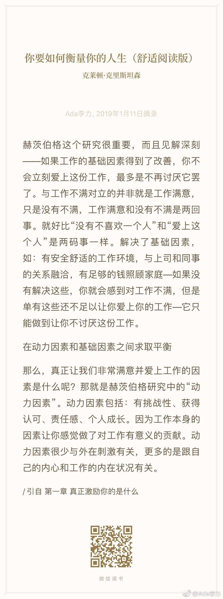

#创业#这两天密集听了某创业服务机构的几节线上课，发现最有名气的某个投资者，讲得最垃圾，几乎就是媒体口水观点的集成大杂烩，偏偏这个人还连续几年都在这个机构里搞孵化营和实验室。倒是以前没听过的几个投资人，老老实实地分享了自己的看法，判断以及逻辑，内容不错。
#读书#实际获得的奖赏，还没有渴望奖赏，带来的驱动力大。这真是个值得好好琢磨的人性点。永远无法完全兑现的梦想，但还时不时给些甜头，让人认为梦想能成真，而且自己感觉越来越靠近梦想成真，才是最能持续的激励策略。
#创业# 商业提供很多操纵用户的方法，创业者会面临道德选择，什么时候可以操纵，什么时候不可以？要使用操控模式，需要问两个问题：第一个问题是“我自己会使用这个产品吗”第二个问题“该产品会帮助用户大大提高其生活质量吗”。
#创业#工作分基础因素和动力因素奖金归类到基础因素，就是这方面做好了，员工对工作没有不满意。但是，没有不满意，不等于满意。要做好动力因素，员工才会满意。动力因素包括：有挑战性, 获得认可，责任感和成长。肯定有人不同意以上观点。没什么，你只要把认同这些观点的同事找来就行。不是一类人，不必硬捆在一起。